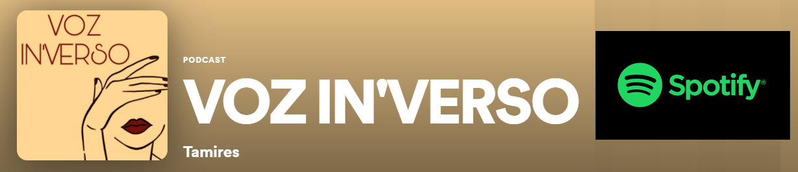

Saudações Poéticas 2! Douglas
Ínicio
Bio
Contatos
Bem-vindo(a) ao In'verso
Aqui é onde o meu texto começa.........
Sobre a autora
Poesie-se
Poemas Lunardelle
Nascer
Crescer
Amar
Envelhecer
Morrer
Resurgir-Fênix
Projetos poéticos

> Indicações
Livros poeticos de autores diversos...